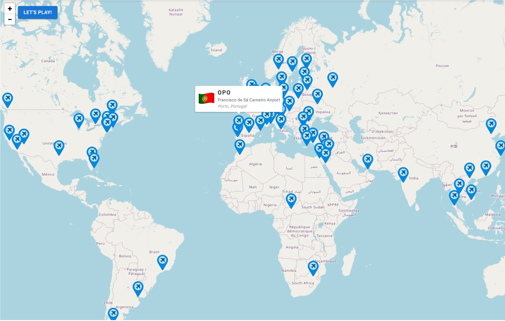
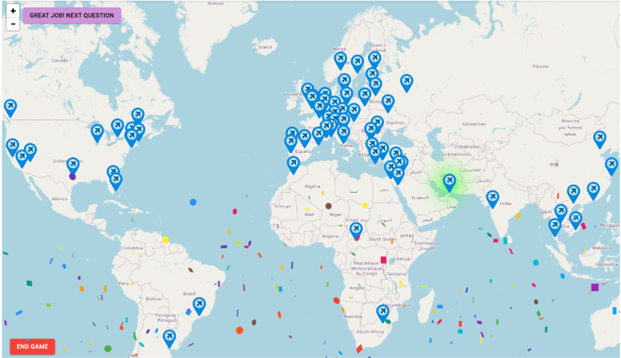
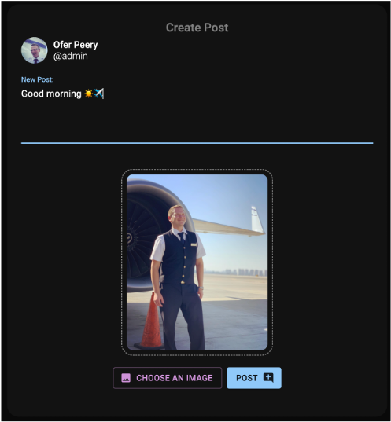
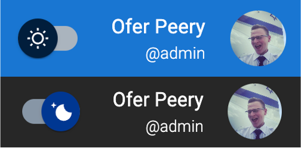
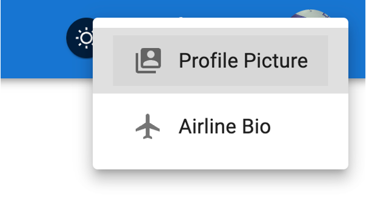
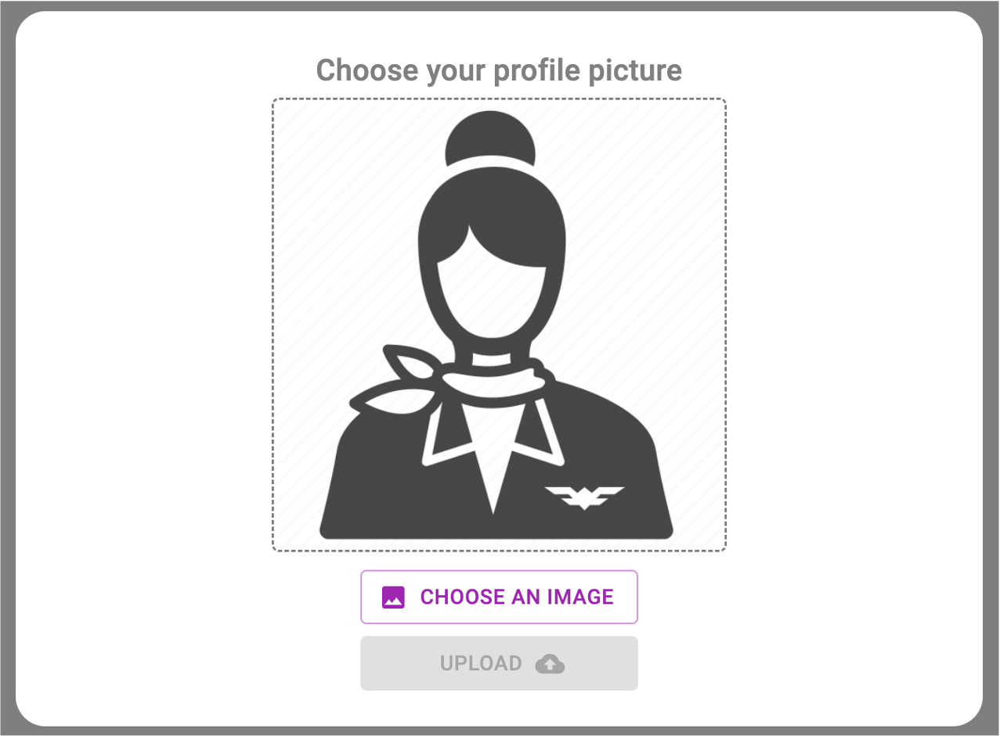
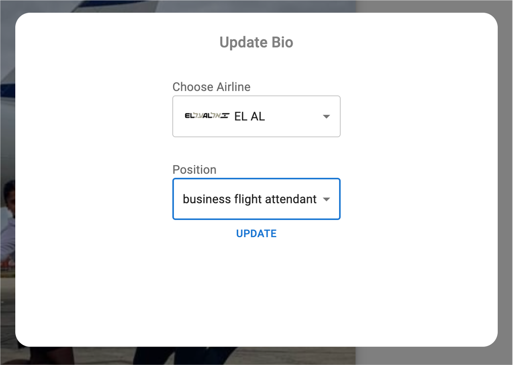
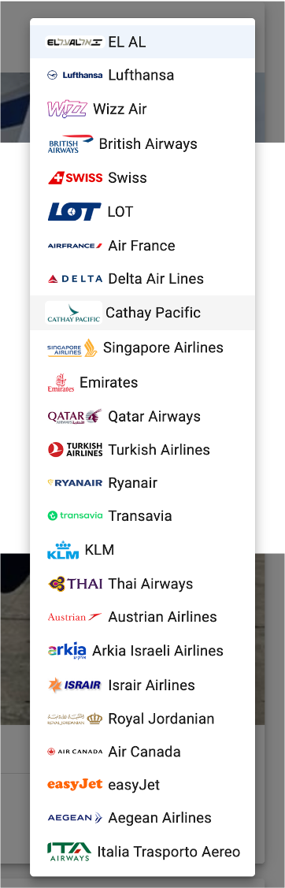
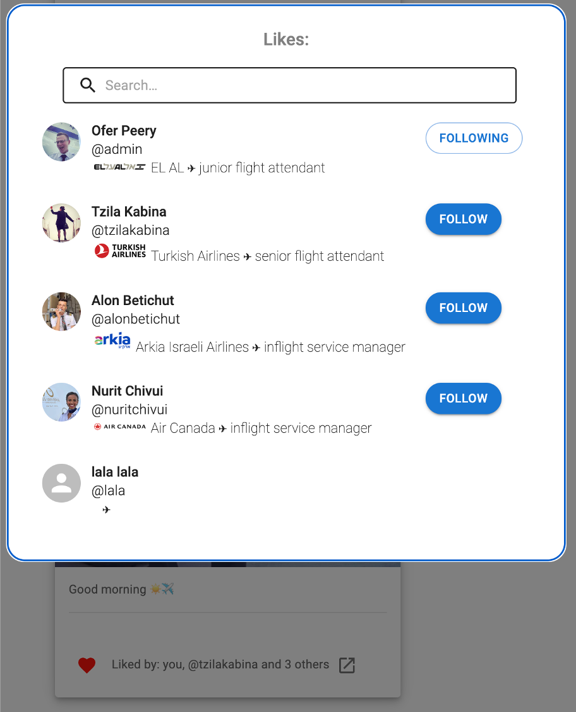

For installing - run the following commands in your terminal:
- cd client
- npm install
- npm run build
- cd ../server
- npm install
For running the app, run this command in your terminal from /server directory and then go to the url in the browser:
- npm run start
- http://localhost:8090
For testing, run the following command in your terinal from /server directory:
- npm run test
Note:
Currently registered users (other than "admin") have the password: a1234
(1) Quiz - Emergency Training:
This static
page allows the crew-member users to train for their periodically
emergency exams, by answering shuffled multiple-choise questions
similar to those in the exams.
The users can see their score
during the quiz, get feedback after each answering and see a full
report which they can print at the end of the quiz, to learn from
it. 📚
(2) Map - Airport Challenge:
This static page provides a fun and visual game to the crew-member users to play around with airports around the world.
This page shows the users an interactive world map with pins of airports. The users can zoom in and out by the buttons or by scrolling anytime.
First - hovering over those pins shows a tooltip with its IATA code (like: JFK) and national information. Later - in "Play" mode, a IATA code appears on the screen and the user should click the corresponding pin.
If the user is wrong - the pin glows in red, and the user can try again until succeeds.
If the user is correct - the pin glows in green, and a confety animation is shown 🎉  
(1) Upload a photo to a post:
Users can choose to attach a photo to their post - to grant some life to their posts. 😎
Clicking the "+" button at the left-bottom corner of the screen opens the creating-post modal with a dedicated button to choose a photo from the user's file system.
A styled quick view is shown before posting.

(2) Persist Dark mode:
Logged-in users can switch between dark and light modes, applied to the UI of the whole application - by the toggle at top bar.
This information is persist and saved in the server's DB, such that users will see their personal prefference in their next login.

- Modeling the data
which collections there should be? for example: should a 'user' entity hold the post created by this user, or should the posts be in another collection? - Dealing with a large technological stack
which npm libraries to choose and how to work with them properly? For example in the client: React, Joi, ahooks, axios and MUI. In the server: express, multer, bcrypt, jest, Joi - Working End-to-end on both client and server
and develop the features such that the right data gets to the right place, synchronizing all the async requests and refresh the UI upon backend modifications. - Establishing the whole infrastructure
of the project - the routes (and the protected ones) in both client and server, the user and authenticating management, how to maintain the state in the client.
I submit the project by myself. Ofer Peery - ID: 206021024
NOTE:
- Except for the login, register and readme.html routes - a valid access-token embeded in a cookie is required.
- To request admin's data - a valid cookie of an admin is required.
- Valid inputs must be sent along with the request (in body / query-string / params), enforced by the server.
| auth | users | posts | admin-control | images and files | ||||||||||||||||||||||||||||||||||||||||||||||
|---|---|---|---|---|---|---|---|---|---|---|---|---|---|---|---|---|---|---|---|---|---|---|---|---|---|---|---|---|---|---|---|---|---|---|---|---|---|---|---|---|---|---|---|---|---|---|---|---|---|---|
|
|
|
|
|
Server
- The passwords are hashed and validated by "bcrypt" and the ACCESS_TOKEN_SECRET in ".env" file (shared for you to succeed checking)
- Input validations with "Joi" package
Client
- Some css animations: Text animation in login page and the Airplane-Loader when getting into the application
- Click on the top right avatar to upload a profile picture and update your airline bio
- Reuse of the "Following Users" page to show the likes list of a post
    